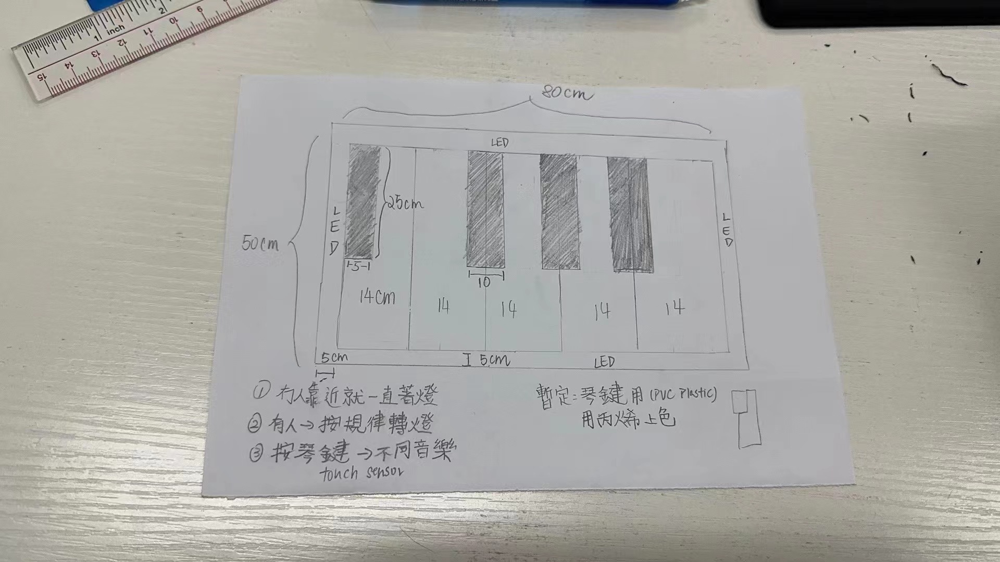
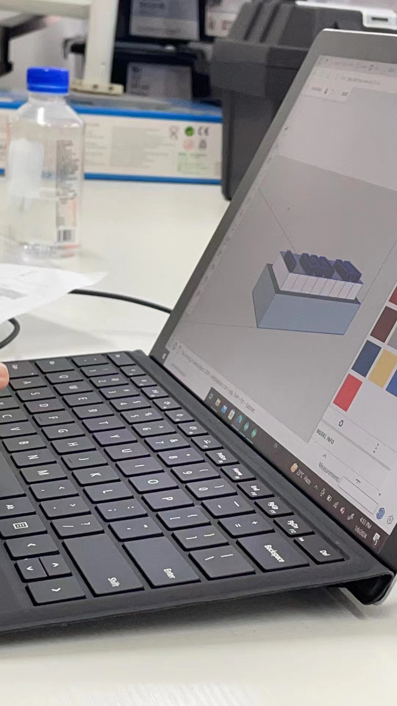

Prototype
Our finalized decision, a motion detected piano! In our prototype, we have sketched out the structure of our creation, the size of it, materials needed, and some notes that may be used in the final creation!



Production

Model
With the prototype planned out, we decided to try and make a model in SketchUp right from our imaginations. And so our first visualized 3D model has been made!